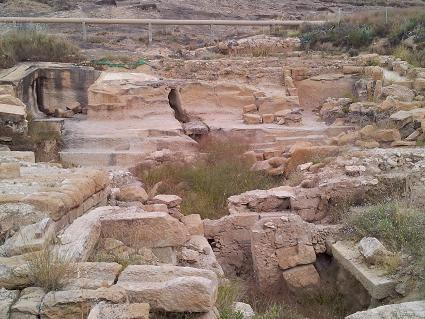
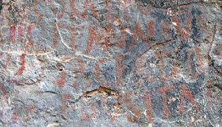

|
El yacimiento del Santuario de
Fortuna es único en la península. El santuario de la Cueva Negra es de origen
ibero. Destacan sus inscripciones con pintura roja, únicas en el Imperio
Romano. Un conjunto de tres abrigos rocosos.
Los Baños datan del siglo
I. El Ninfeo-Balneario romano de los baños de Fortuna.
Los trabajos arqueológicos han sacado a la luz un complejo religioso de
cabecera tripartita, articulado en torno a una piscina y un canal central.
El yacimiento, excavado sólo una parte, se extiende por las casas vecinas
y por debajo de los actuales Baños de Fortuna. Se ha documentado numerosa
cerámica de época romana. Se cree que su época de máximo esplendor fueron
los siglos I y II. También se interpretó una posible hospedería asociada a
los baños.
En época islámica se reutilizó
el conjunto, pero fue en el siglo XVII cuando el yacimiento es usado como
cantera para construir el hotel. Por esta razón, el lado derecho del
yacimiento se encuentra en peor estado de conservación.
|
 |

En la Cueva Negra destacan los tituli picti o
textos latinos pintados entre los que sobresalen fragmentos de la
Eneida de Virgilio. |
| |
|
|